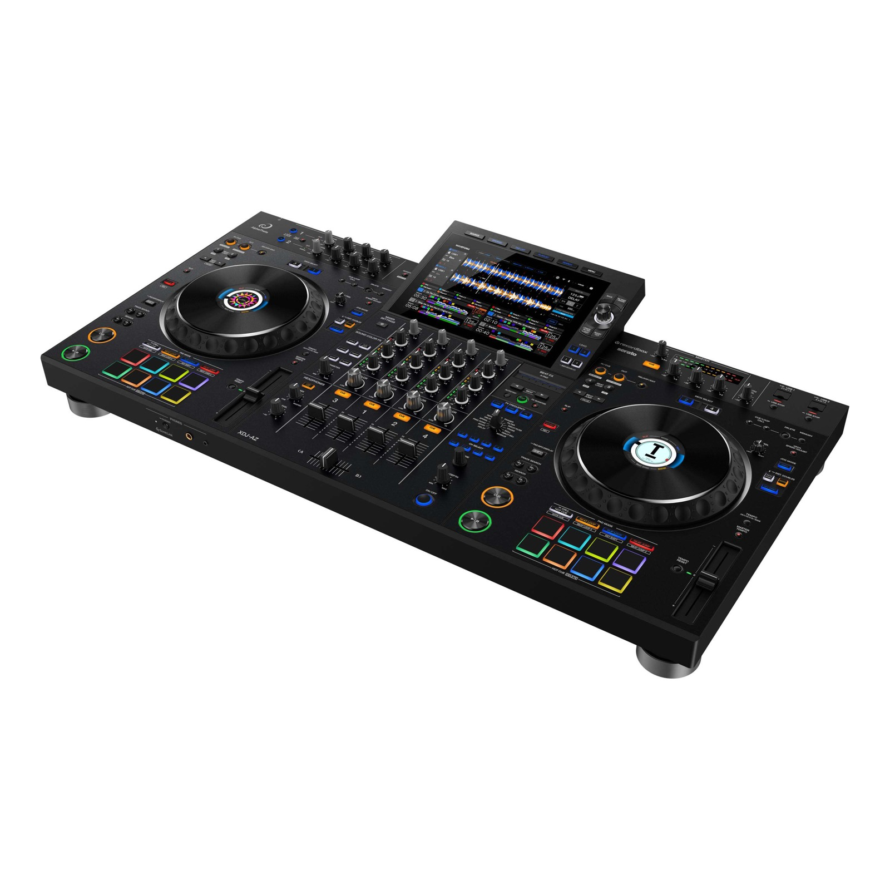

A rekordbox USB for the XDJ-AZ, written on your computer
The XDJ-AZ is AlphaTheta's newest full-size all-in-one — the four-channel booth that travels. Alpha prepares what it plays: a rekordbox USB written directly on your computer, with analysis, harmonic order and loudness handled before the gig, not during it.

- 4 decks
- 10.1-inch touchscreen
- 2 USB ports
- rekordbox USB
What Alpha writes for the XDJ-AZ
Alpha writes a full rekordbox USB the player reads directly: the classic export.pdb library every CDJ and XDJ has read for years, the newer encrypted exportLibrary.db the latest players prefer, the per-track analysis files with beat grid, cues and waveforms, album artwork, and the audio under Contents/<Artist>/<Album>. No rekordbox software is needed anywhere in the chain — the stick plugs straight into the gear.
The beat grid is built from the interpreted BPM, so tracks arrive beat-ready and the player does not re-analyze anything. One limit to know: Alpha writes one constant beat grid per track, so tempo changes inside a track are not modelled.
As a current-generation player the XDJ-AZ reads the newer encrypted rekordbox library — Device Library Plus — which Alpha writes alongside the classic format: one stick for the AZ and for every older player you might encounter. Playlists arrive in set order with beat grids and waveforms ready.
From folder to XDJ-AZ in four steps
Good to know on the XDJ-AZ
- Current-generation player, current-generation library: Alpha writes the encrypted Device Library Plus database the AZ prefers, plus the classic export.pdb for everything older.
- The AZ re-analyzes nothing — grids and waveforms come from Alpha's ANLZ files and load instantly.
- FAT32, exFAT and HFS+ all mount on the AZ; NTFS doesn't. There's no SD slot — it's USB only.
- rekordbox export is a new target — please confirm it on your own gear before a gig.
Common questions about the XDJ-AZ
Does the XDJ-AZ read Alpha's stick without rekordbox?
Yes. Alpha writes the rekordbox database and analysis files itself; the AZ reads the stick natively — no software, no subscription.
Is the XDJ-AZ too new for Alpha's export?
No — Alpha writes the newer encrypted Device Library Plus library the latest players prefer, alongside the classic one. It is a new target though, so confirm on your own unit before a gig.
Will my stick also work on club CDJs?
Yes — both library formats are on the stick, so CDJ-3000s and older players read it too.
Try it with your own XDJ-AZ
Every feature is in the free download — analysis, harmonic sequencing, loudness matching and the rekordbox USB write. It stops after 10 tracks, which is enough for one real set on your own stick. After that it's €30 including VAT, once. No subscription.
Related players
Different setup? Check your own gear — or read the full technical reference in the knowledge base.